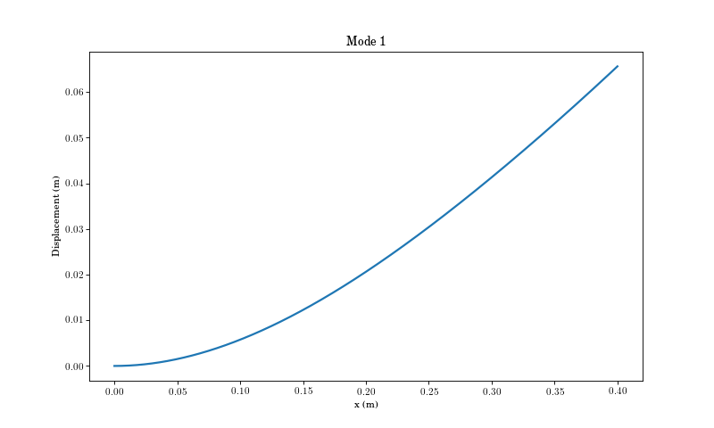

Welcome to Vibration Toolbox’s documentation!¶
The Engineering Vibration Toolbox for Python¶
Joseph C. Slater and Raphael Timbó
This is the translated Engineering Vibration Toolbox, originally written for Matlab ®, but with extra features only for Python. This is an educational set of codes intended for demonstration. You may find them useful for application, but that isn’t the intent.
Installation¶
Installation is made easy with pip, with releases as we have time while we try
to create a full first release. Much of it works already, but we certainly need
issue reports (on github).
To install:
pip install --user vibration_toolbox
To run, open a jupyter notebook and type:
import vibration_toolbox as vt
For examples, see the JupyterNotebooks folder.
-
sdof.free_response(m=10, c=1, k=100, x0=1, v0=-1, max_time=10)[source]¶ Free response of a second order linear oscillator.
Returns t, x, v, zeta, omega, omega_d and A resulting from the free response of a second order linear ordinary differential equation defined by \(m\ddot{x} + c \dot{x} + k x = 0\) given initial conditions \(x_0\) and \(\dot{x}_0 = v_0\) for \(0 < t < t_{max}\)
Parameters: m, c, k : floats, optional
mass, damping coefficient, stiffness
x0, v0: floats, optional
initial displacement, initial velocity
max_time: floatm optional
end time for \(x(t)\)
Returns: t, x, v : ndarrays
time, displacement, and velocity
zeta, omega, omega_d, A : floats
damping ratio, undamped natural frequency, damped natural frequency, Amplitude
Examples
(Source code, png, hires.png, pdf)

{kind=link}
{kind=link}